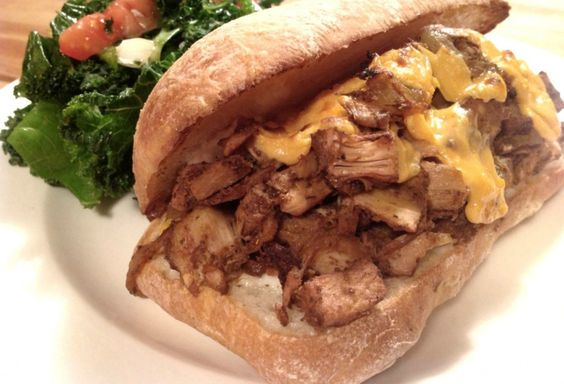
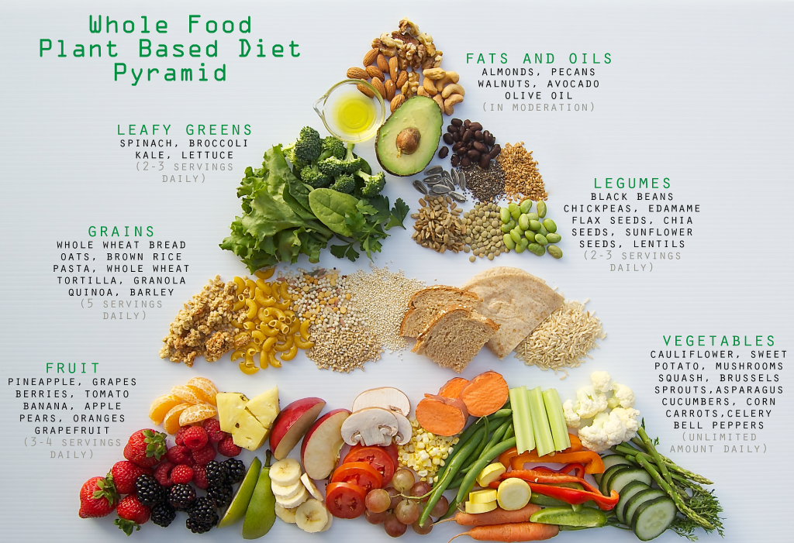
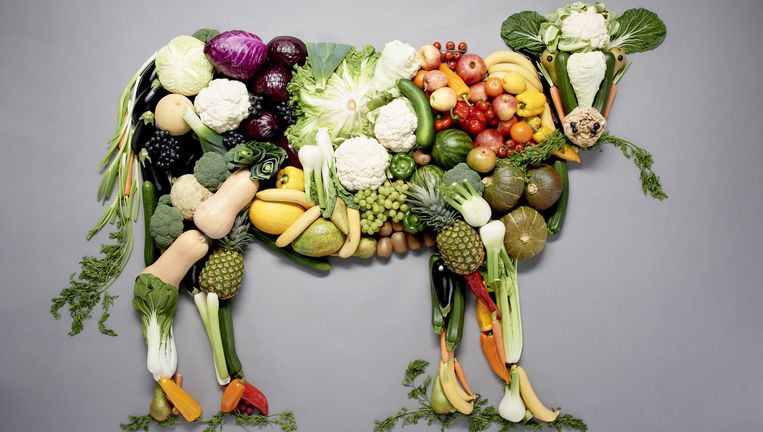
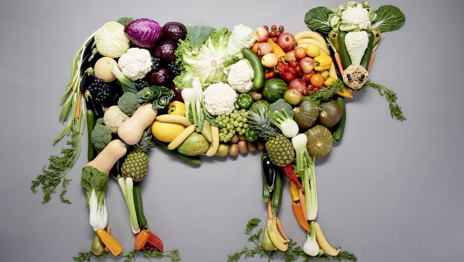

Veel mensen denken dat veganistisch eten vaak saai is, niet meer als wortels en salade eten. Dit is al lange tijd achterhaald. Er zijn momenteel zoveel mogelijkheden om lekker te eten. We kunnen het over gezondheid gaan hebben maar voor nu neem ik jullie mee in de wereld van lekker veganistisch eten.
  
